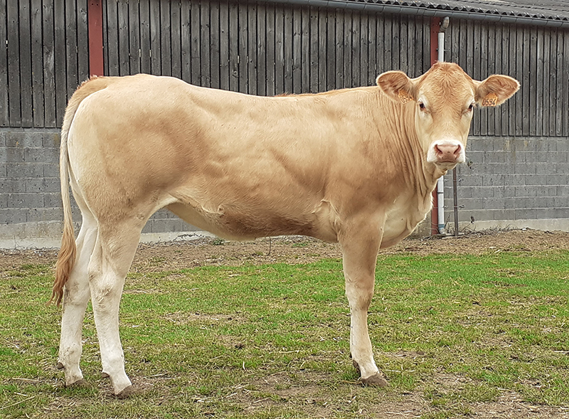
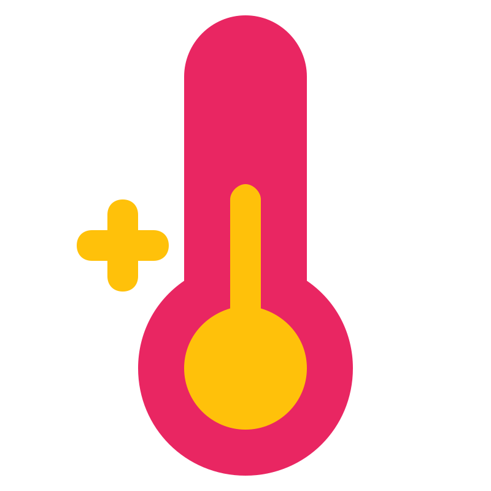

Vacas y Toros en Venta
Vaca Holstein
La vaca Holstein, vaca frisona u Holstein-Frisia es una raza vacuna procedente de la región frisosajona (Baja Sajonia y Schleswig-Holstein en Alemania, Frisia y Holanda del Norte en los Países Bajos), que se destaca por su alta producción de leche, carne y su buena adaptabilidad.
$3000

Toro Guzerat
El Guzerat o Guzerá es un raza bovina brasileña de alta adaptabilidad empleado para la cruza de ganado. Proveniente del cruce indio Kankrej, importado a Brasil. Se caracteriza por tener la capacidad de pasar por largos períodos de sequía, comunes en el interior del noreste de Brasil, perfecto para el clima de la mayoria de paises Sudamericanos.
$3500
- 
-


Vaca Girolando
El Girolando es una raza de ganado originalmente creada en Brasil, que resulta del cruce entre la raza Friesland-Holstein (Bos primigenius taurus ) y la raza Gyr (Bos Bos primigenius indicus). Este provoca que el Girolando adquiera la elevada capacidad de producción de leche del ganado Holstein con la rusticidad de la raza Gyr, resultando en una producción de leche rentable en zonas tropicales y subtropicales.
$4000